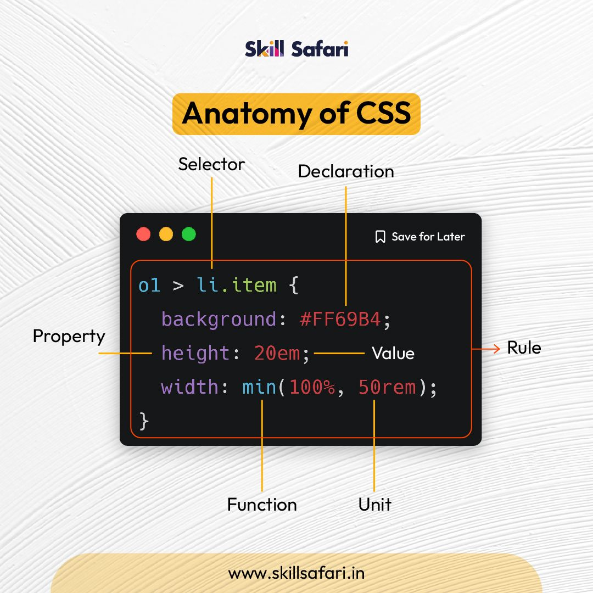

¿Qué significa CSS?
CSS significa Cascading Style Sheets, que en español se traduce como Hojas de Estilo en Cascada.
¿Para qué sirve el CSS? ¿Qué programa se utiliza para interpretar el CSS?
CSS sirve para dar diseño y estilo a una página web, permitiendo modificar colores, tamaños, fuentes, posiciones, márgenes, fondos, etc. El CSS es interpretado por los navegadores web, como Google Chrome, Microsoft Edge, Firefox o Safari.
¿A qué se llama regla de CSS?
Una regla de CSS es una instrucción que indica qué estilos se deben aplicar a uno o varios elementos HTML. Está formada principalmente por un selector y un conjunto de declaraciones.
¿Cuál es la anatomía de la regla de CSS?

- Selector:
- Indica qué elemento o elementos HTML se van a modificar.
- Regla:
- Es el conjunto completo que indica qué estilos se aplicarán.
- Declaración:
- Es una instrucción formada por una propiedad y un valor.
- Propiedad:
- Indica qué característica del elemento se quiere modificar.
- Valor:
- Indica qué valor tendrá la propiedad.
- Unidad:
- Indica cómo se mide un valor numérico, como px, %, em o rem.
- Función:
- Permite realizar cálculos o utilizar una función dentro de un valor.
¿Qué es un selector en CSS?
Un selector es la parte de una regla CSS que permite seleccionar los elementos HTML a los que se les aplicará un determinado estilo.
Identificar y definir los selectores: de ID, de clases, universal, de etiquetas,descendente.
- Selector de ID: se utiliza para seleccionar un elemento que tiene un identificador único. Se escribe con #.
- Selector de clase: selecciona todos los elementos que tienen una determinada clase. Se escribe con .
- Selector universal: selecciona todos los elementos de la página. Se representa con *.
- Selector de etiqueta: selecciona todos los elementos de una determinada etiqueta HTML.
- Selector descendente: selecciona elementos que se encuentran dentro de otro elemento.
Explicar brevemente utilizando una lista ordenada: ¿cómo funciona el CSS?
- El navegador carga el HTML (por ejemplo, lo recibe de la red)
- Convierte el HTML en un DOM (Modelo de objetos del documento). El DOM representa el documento en la memoria del ordenador.
- Entonces, el navegador va a buscar la mayor parte de los recursos vinculados al documento HTML, como las imágenes y los videos incrustados... ¡y también el CSS vinculado! JavaScript aparece un poco más adelante en el proceso
- El navegador analiza el CSS y ordena en diferentes «cubos» las diferentes reglas según el tipo de selector. Por ejemplo, elemento, clase, ID, y así sucesivamente. Para cada tipo de selector que encuentre, calcula qué reglas deben aplicarse y a qué nodos en el DOM se les aplica el estilo según corresponda (este paso intermedio se llama árbol de renderización).
- El árbol de renderización presenta la estructura en que los nodos deben aparecer después de aplicarle las reglas.
- En la pantalla se muestra el aspecto visual de la página (esta etapa se llama pintura).
¿Cuáles son las tres formas para vincular CSS con HTML?
Las tres formas para vincular CSS con HTML son:
- CSS en línea (Inline): se escribe directamente dentro de la etiqueta HTML utilizando el atributo style. Se utiliza principalmente cuando se quiere aplicar un estilo específico a un solo elemento.
- CSS interno: se escribe dentro de una etiqueta style, generalmente ubicada dentro del head del documento HTML. Permite aplicar estilos a varios elementos de una misma página.
- CSS externo: los estilos se escriben en un archivo separado con extensión .css y luego se vinculan al documento HTML mediante la etiqueta link. Es la forma más utilizada cuando un sitio tiene varias páginas, porque permite compartir los mismos estilos entre ellas.